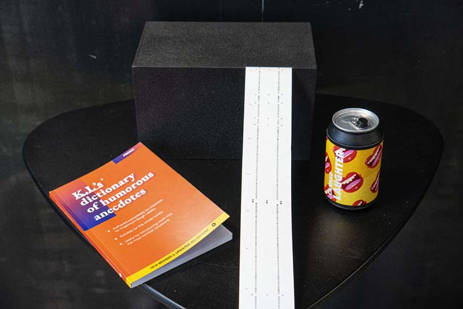
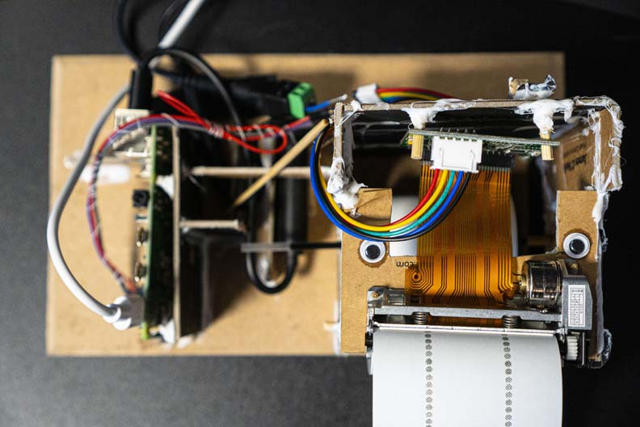
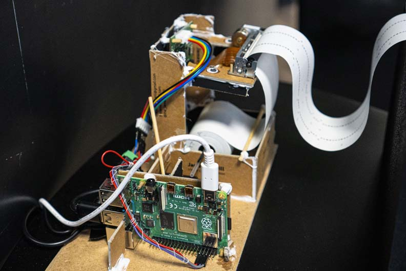
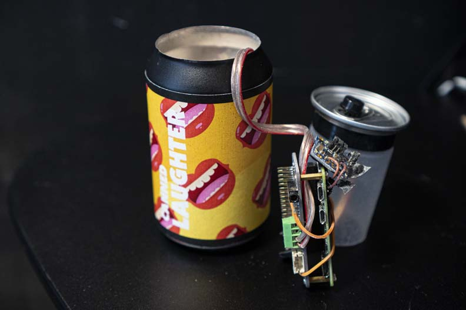
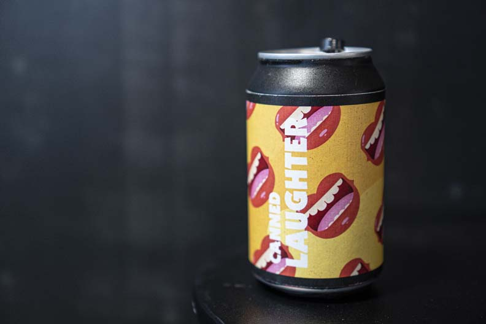
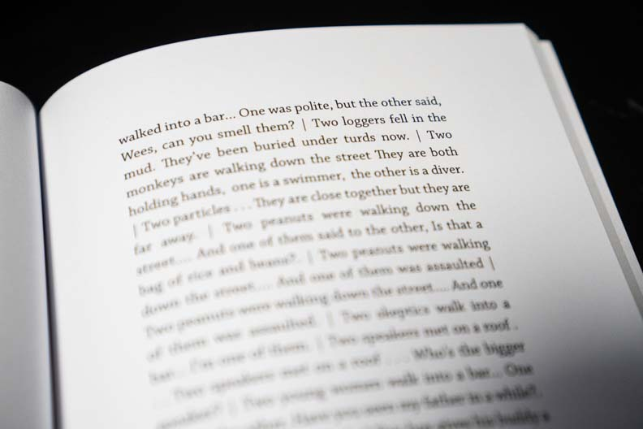

Office Humour is a speculative design piece that explores the culture that might emerge when data points like laughter function as a performance metric.
The piece raises questions about agency at multiple levels. Humans can adapt their culture to algorithmic motoring. But is that ok? Do we allow humans and machines the agency to develop their culture together, or should one always be subject to the other? Who has agency in this situation? The humans who create the laughter, or the algorithm who instigates it?

The piece functions on the basis of a neural network to take live measurements of laughter from its environment and places them within the narrative of a satirical productivity product. Participants are invited to interact with the product. As they do, they experience how laughter — a very natural and personal sound — can be turned into a data point and used to police and monitor their performance in an inhuman way.
The piece tells a story that encourages participants to reflect on the sorts of data they gather in their work and the purposes to which any data may be put in the future.
The Laugh Detector
  The Laugh Detector runs an open-source tensorflow classification model, categorising laughter verses non-laughter. A raspberry pi 4 samples the sound from the environment every three seconds, classifies it, and renders a visualisation. The visualisation is printed by a thermal receipt printer joining to the previous visualisation. The result is a live trace of the laughter in the environment which slowly begins the fill up the space it’s in.
The Laugh Detector runs an open-source tensorflow classification model, categorising laughter verses non-laughter. A raspberry pi 4 samples the sound from the environment every three seconds, classifies it, and renders a visualisation. The visualisation is printed by a thermal receipt printer joining to the previous visualisation. The result is a live trace of the laughter in the environment which slowly begins the fill up the space it’s in.
The Can of Laughter
  The Can of Laughter is an interactive can. Upon pushing the button on top of the can the sounds of stock laughter emerges from a speaker on the bottom. Inside the can is a raspberry pi zero with a sound hat, and battery pack.The Joke Book
 The Joke Book, designed and edited almost completely by a text generation neural network. The neural network was trained with a large corpus of cleaned jokes and anecdotes. The results are presented in the book unedited, only cleaned of profanities.Office Humour was pressented at the 2019 EPIC conference in RISD